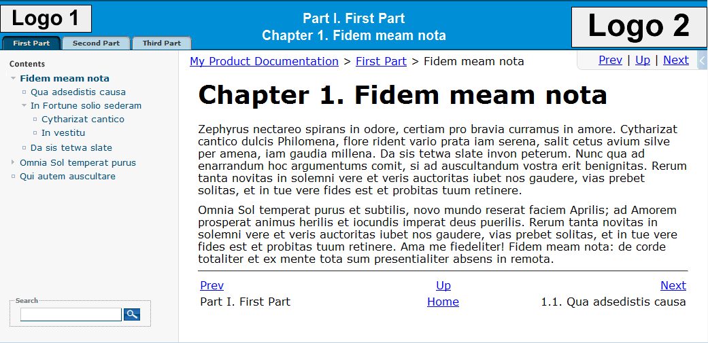
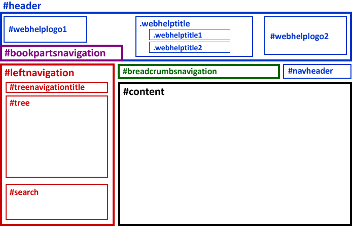
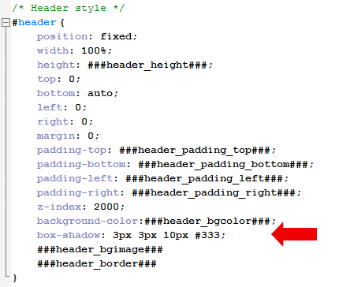
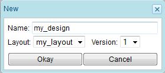
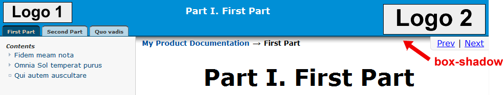

1.13.13. Creating a new Web-Help layout
Docmenta includes two Web-Help layouts named "classic" and "slim". If the given layouts do not fit your needs you can create your own WebHelp layouts. The recommeded way to create a new layout is to copy one of the existing layouts and to adapt it. The Web-Help layouts are stored in the installation directory
<docmenta-webapp>/webdesigner/web_layouts
where <docmenta-webapp> is the Docmenta web-application directory. Each layout is stored in a sub-folder. The layout-folder contains one or more sub-folders for the different layout-versions. Initially, only a folder named "v1" has to exist. For example, given a layout with name "my_layout", the location of the first version of the layout files is:
<docmenta-webapp>/webdesigner/web_layouts/my_layout/v1
If you need to create a new version of your layout, e.g. to support new browsers, you just need to copy the files from folder "v1" to a new version-folder named "v2", "v3", "v4" and so on. You can then apply the modifications to the files in the new folder, leaving the original layout-files unmodified. This way, old versions of your layout are still available (furthermore it is easier to track layout modifications).
Copying an existing layout
As an example, the layout "my_layout" shall be based on the pre-installed "classic"-layout. Therefore copy all files from "webdesigner/web_layouts/classic/v1" to "webdesigner/web_layouts/my_layout/v1".
The Web-Help configuration files
All Web-Help designs have some common elements. However, for different Web-Help designs the elements may be at different positions and may have different sizes and colors. This is controlled by a CSS-file that defines the overall layout of the Web-Help design. Following image shows an example of a Web-Help output:

Figure 1.13.88. Example Web-Help output
The CSS-file, that positions the elements for the output shown above, uses following layout:

Figure 1.13.89. Web-Help example layout
The names within the boxes are the CSS selectors that can be used to access the elements. For example, the selector "#header" identifies an element that has an ID attribute with value "header". The selector ".webhelptitle" selects an element that has the CSS class "webhelptitle" assigned. In the illustration above, boxes that belong to the same root-element are shown with the same color. For example, #webhelplogo1 is a sub-element of #header, as well as #navheader. The element #bookpartsnavigation, on the other hand, is a separate root element. Note that the hierarchical structure of elements is defined by the Web-Help export and cannot be changed (using CSS). The hierachical structure of the elements is important when using relative positions. As a work-around, in case the hierarchical structure of the Web-Help export is not suitable, CSS allows you to define fixed element-positions, which can be outside of its parent-element.
Note that some elements may be empty or missing, depending on the output-configuration. For example, links to the book-parts are created as child-elements of the #bookpartsnavigation element. However, the links are missing, if the output-configuration setting "Render 1st-Level as" is set to any other value than "book parts" (see Section 2.6.2.1.2, “Numbering settings”). Furthermore, the element #breadcrumbsnavigation only exists, in case the breadcrumbs-setting has been enabled in the output-configuration.
Customizing the Web-Help layout
The layout is controlled by two files:
- positioning.css
- webhelp_config.js
The file positioning.css defines the CSS-rules for all exported Web-Help pages. A CSS-link to this file is included in each exported Web-Help page. The JavaScript-file webhelp_config.js allows to configure the JavaScript-functionality used for the Web-Help pages. The content of this file is inserted at the beginning of a JavaScript-file named main.js. The JavaScript file main.js is generated by the Web-Help export and is referenced from within each exported Web-Help page.
Both files (positioning.css and webhelp_config.js) contain placeholders, e.g. ###body_bgcolor###. Placeholders are names surrounded by three hash-characters (###). The placeholders are replaced by the WebHelp-Designer during export. To adapt the layout, the placeholders in the file positioning.css can be moved to different positions. Furthermore, additional CSS-rules/properties can be inserted or existing CSS-rules/properties can be customized.
As an example of layout-customization, we add a shadow to the header element. Open the file positioning.css in the previously created .../web_layouts/my_layout/v1 folder. Search for the CSS selector #header. and insert the CSS-property box-shadow:

Figure 1.13.90. Adding shadow to the header box
Save the changed file positioning.css.
All other files within the folder, i.e. the poperties-file webdesigner.properties and the image-files, are used by the WebHelp-Designer as default values/images. You can replace these files later on. For now, open the WebHelp-Designer and create a new design named "my_design". Select the newly created layout "my_layout", which should now be available in the selection list:

Figure 1.13.91. Creating a design with the customized layout
After having created the new design. the preview-area of the WebHelp-Designer shows a preview of the custom layout. The layout should be identical to the classic layout, except that the header-box has a shadow:

Figure 1.13.92. Custom layout preview
Defining a default-design
If the initial default values of your newly created design are not suitable, change the settings of the design "my_design" as required (e.g. set different colors). Save the changed settings. If you want to use the saved design as the default for the layout "my_layout", then delete all image-files and the file webdesigner.properties from the layout folder .../web_layouts/my_layout/v1. Now, export the saved design as a zip-file. Extract the zip-file to a temporary folder and copy all image-files and the file webdesigner.properties from the temporary folder to the layout-folder. Now, these files are used as defaults for the layout.
Adding a Web-Help layout as plug-in
On installation of a new Docmenta version, all custom files that have been copied to the webapps directory are removed. Therefore, in our example, the folder my_layout will be lost after upgrade to a new Docmenta version. To avoid this, you need to create a plug-in and install your layout-files as part of a Docmenta plug-in. See Section 1.13.16, “Creating a plug-in” on how to create a plug-in package.